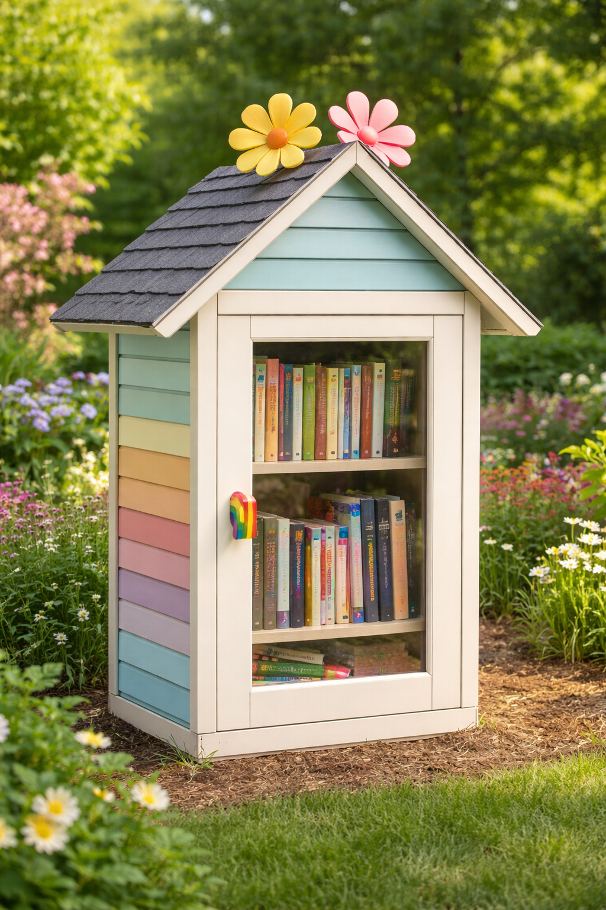

Trois Sœurs is Jane, Ruby, and Lucy — three sisters who build things with their parents out of a little shop in Kansas City. Little libraries, mostly. The kind that live outside, get rained on, and slowly become part of wherever they land.
This one sits in our front yard. We built it for ourselves, honestly, but it didn't stay that way for long. Neighbors started stopping. Friends of friends. People we'd never met. It has a way of stretching a passing moment into something a little longer.
We find all kinds of things inside. Books, mostly, but also small surprises — stuffed animals, handwritten notes, a harmonica once. Each one left by someone passing through.
Our favorite part is just watching people use it. Someone stopping to look. Someone sitting on the wall for a minute. Someone taking something, or leaving something behind.